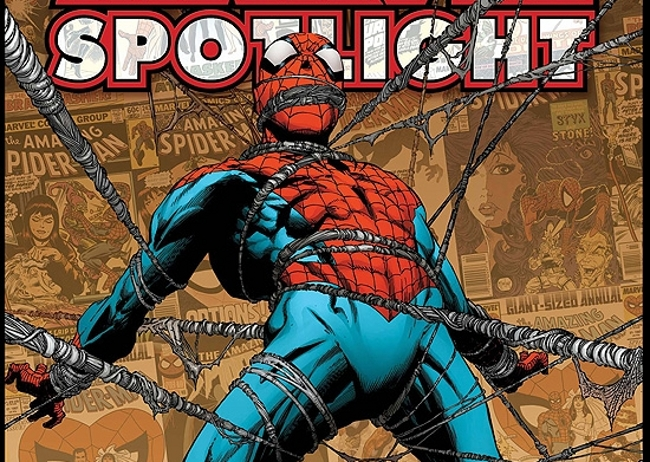

Fecha de defunción:
Fecha de defunción:
junio de 2011
infanciaadolecencia
adultez

es Peter Parker, un adolescente huérfano criado por sus tíos Ben y May en Nueva York. Tras ser mordido por una araña radiactiva, obtuvo poderes sobrehumanos y, tras la trágica muerte de su tío, juró combatir el crimen con la premisa de que "un gran poder conlleva una gran responsabilidad
Datos personales:
Nombre:Peter Benjamin Parker
fecha de nacimiento:10 de agosto de 2001
Padres:Richard y Mary Parker
Hermanos:Teresa Parker
Estado civil:casado con Mary Jane Watson
HijosMay "Mayday" Parker (Tierra-982),Benjamin "Benji" Richard Parker,anna-May "Annie" Parker (Tierra-18119),Richard Parker (House of M)